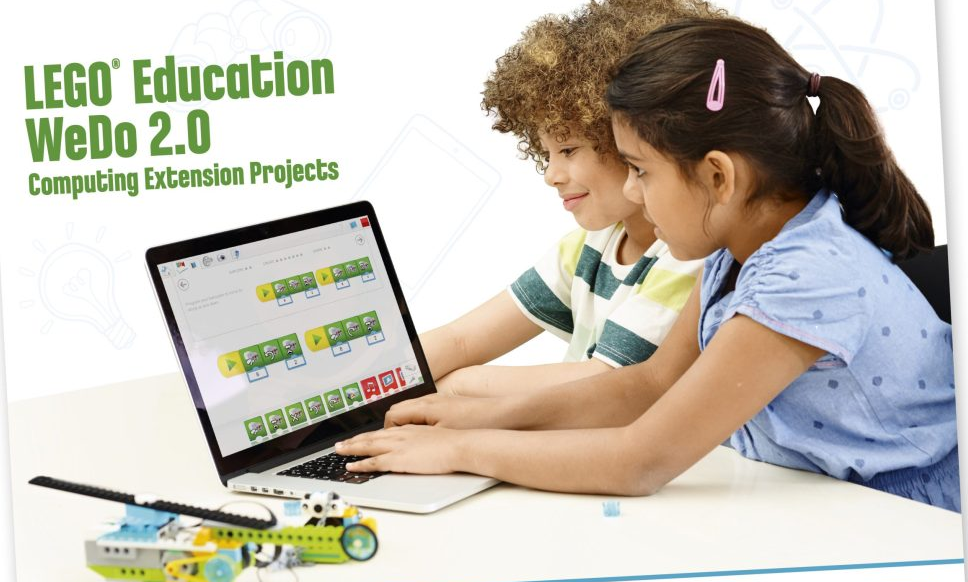

Hệ thống bài giảng tích hợp Cơ khí vật lý (bánh răng, ròng rọc, đòn bẩy) và Tư duy thuật toán kéo thả. Thiết kế chuyên sâu cho học sinh độ tuổi 7 - 10 tuổi trong hệ sinh thái đào tạo của Lập Trình Robot.

Bộ Kit Học Tập Thực Tế
SmartHub BLE + Motor DC + 2 Cảm biến
16
Buổi chuẩn
15+
Mô hình STEM
100%
Thực hành chạm
Nội dung này nằm trong Mô-đun 2: "Kỹ Sư Robot Nhí" (7 - 9 Tuổi)
Phụ huynh có thể xem tổng quan lộ trình dài hạn 10-18 tuổi hoặc đăng ký học thử trực tiếp.
Toàn cảnh về khoản đầu tư giáo dục phát triển tư duy khoa học và công nghệ từ sớm cho con.
Con không chỉ chơi xếp hình thông thường. Con học về bánh răng, ròng rọc, đòn bẩy, và hiểu nguyên lý vật lý (lực kéo, mô-men xoắn, tốc độ) thông qua việc tự tay thiết kế và tinh chỉnh cấu trúc robot.
Trẻ học lập trình thông qua giao diện khối lệnh kéo thả trực quan. Hiểu bản chất vòng lặp, câu lệnh rẽ nhánh điều kiện (If-Else) và cách xử lý tín hiệu phản hồi từ cảm biến chuyển động & góc nghiêng.
Giáo trình áp dụng tư duy "Sửa lỗi kỹ thuật" - khi robot không chuyển động hoặc chạy lệch đường, trẻ học cách bình tĩnh phân tích xem lỗi do cơ cấu bánh răng bị kẹt hay do thuật toán lập trình để tự mình khắc phục.
Thiết kế 4 giai đoạn logic: từ làm quen linh kiện phần cứng cơ bản đến tự chủ thiết kế các dự án Robocon sáng tạo.
Học sinh làm quen với Hub trung tâm Bluetooth, Motor DC, Cảm biến WeDo 2.0 và giao diện phần mềm lập trình trực quan.
Khám phá sâu các cơ cấu truyền động, tỉ số truyền bánh răng, lực ma sát và nguyên lý cân bằng động lực học.
Mô phỏng chuyển động sinh vật học tự nhiên và chế tạo giải pháp bảo vệ môi trường đô thị thông minh.
Thử thách thiết kế mở (Open-ended project). Học sinh không có hướng dẫn lắp ghép cố định, tự do sáng tạo giải quyết vấn đề thực tế.
Bấm vào từng tab bên dưới để khám phá quy trình giảng dạy 3 bước tiêu chuẩn qua ví dụ chuyên đề: "Xe Đua Thần Tốc (Speed)".
Mục tiêu: Kích thích sự tò mò tự nhiên. Giúp học sinh nhận ra tốc độ của xe đua không chỉ do động cơ mạnh, mà còn phụ thuộc vào lực ma sát (lốp xe) và hệ thống bánh răng truyền động.
Bộ câu hỏi khơi gợi tư duy:
Cùng xem đoạn video hoạt hình ngắn về Max và Mia (nhân vật hướng dẫn trong Lego Education WeDo 2.0). Hai bạn đang muốn chế tạo chiếc xe đua nhanh nhất để tranh cúp tốc độ.
Thử thách của buổi học:
Tự tay lắp ráp xe đua, lập trình và đo xem xe chạy hết đường đua 2 mét trong bao nhiêu giây!
Học sinh theo dõi chỉ dẫn 3D trong phần mềm WeDo 2.0 trên iPad / Laptop.
Gắn bánh răng 24 răng (bánh răng chủ động từ Motor) vào bánh răng 8 răng (bánh răng bị động nối trục bánh xe). 1 vòng quay của motor khiến bánh xe quay đến 3 vòng → Xe phóng vọt với tốc độ cao!
Kết nối SmartHub qua Bluetooth BLE và kéo thả khối lệnh trực quan.
Đăng ký ngay hôm nay để nhận 1 buổi học thử trải nghiệm thực tế cùng bộ kit Lego WeDo 2.0 và được kiểm tra năng lực tư duy logic/không gian hoàn toàn miễn phí.
Nhận tài liệu chuyển giao & giải pháp phòng Lab Robotics cho trung tâm Anh ngữ / trường tiểu học.